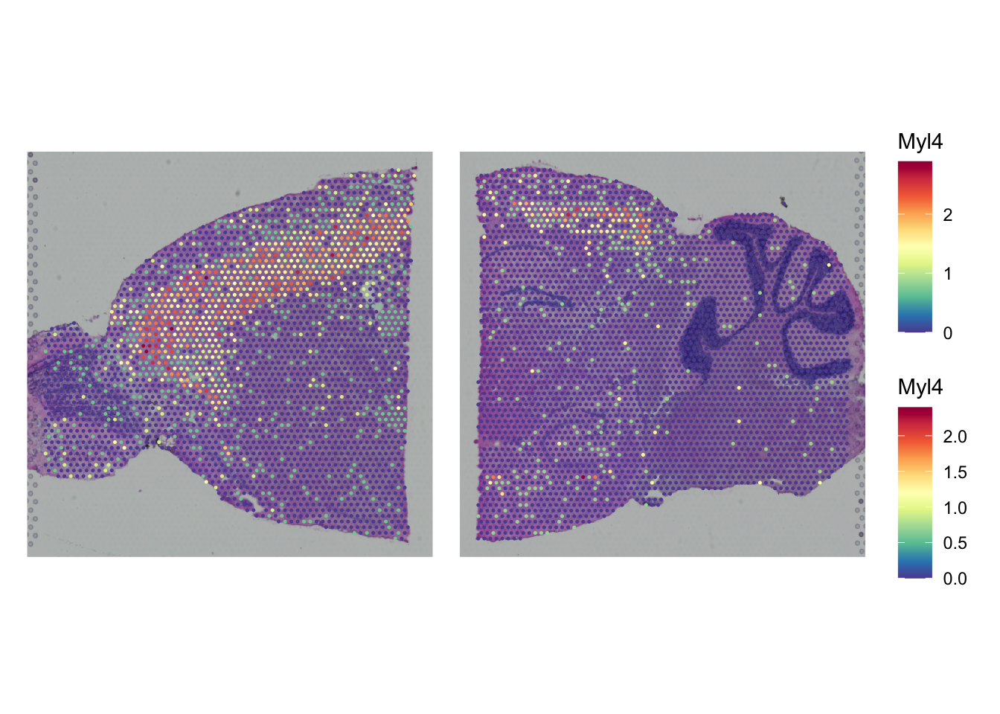
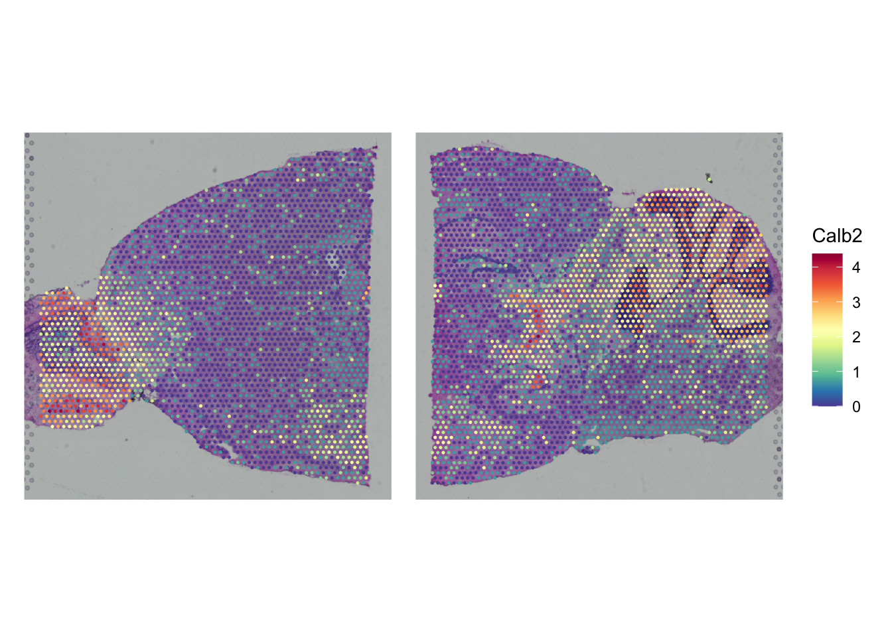

library(Seurat)
library(ggplot2)
library(clustree)
library(patchwork)
library(dplyr)Normalization and scaling
Loading the required packages:
We load the object that was output of the quality control part:
seu <- readRDS("output/seu_part2.rds")Normalization and scaling with SCTransform
Biological heterogeneity in spatial RNA-seq data is often confounded by technical factors including sequencing depth. The number of molecules detected in each spot can vary significantly between spots, even within the same celltype. Note that the variance in molecular counts/spot can be substantial for spatial datasets, particularly if there are differences in cell density across the tissue.
Therefore, we apply sctransform normalization (Hafemeister and Satija, Genome Biology 2019), which builds regularized negative binomial models of gene expression in order to account for technical artifacts while preserving biological variance. During the normalization, we also remove confounding sources of variation (here we take mitochondrial mapping percentage).
We need to apply SCTransform on each individual slice. Therefore, we split the object back into a list (with SplitObject). Next, we run into a small issue that both slice images are maintained in the split object, so we have keep only the image corresponding to the count table. Then, we apply SCTransform on the individual slices and merge the objects back together with merge:
seu_list <- SplitObject(seu, split.by = "orig.ident")
# preparing both objects for SCTransform
for(slice in names(seu_list)) {
# images aren't split with SplitObject. Resetting the images.
seu_list[[slice]]@images <- setNames(
list(seu_list[[slice]]@images[[slice]]),
slice)
# bugfix based on https://github.com/satijalab/seurat/issues/8216
seu_list[[slice]][["RNA"]] <- seu_list[[slice]][["Spatial"]]
DefaultAssay(seu_list[[slice]]) <- "RNA"
}
seu_list <- lapply(X = seu_list, FUN = SCTransform, assay = "RNA",
vars.to.regress = "percent_mt")
Exercise
After running the code, to do the SCT transformation, which assays have been added to the seurat object? Note that you can get assay data with the function Assays.
Answer
Just by typing the object name (seu) we see which layers are in there:
Assays(seu_list[[1]])[1] "Spatial" "RNA" "SCT" Showing us that an assay called SCT has appeared.
Now that we have done the transformation it is also possible to plot gene experssion information in a spatial context, e.g. Myl4:
SpatialPlot(seu_list$Anterior,
features = "Myl4") +
SpatialPlot(seu_list$Posterior,
features = "Myl4") +
plot_layout(guides = "collect") &
theme(legend.position = "right")
Exercise
Create the same plot, but now for the gene Calb2. In which two parts of the brain is it primarily expressed?
Hint: check out Allen Brain Atlas for the names of the different parts of the brain.
Answer
gene <- "Calb2"
SpatialPlot(seu_list$Anterior,
features = gene) +
SpatialPlot(seu_list$Posterior,
features = gene) +
plot_layout(guides = "collect") &
theme(legend.position = "right")
It’s mainly expressed in the olfactory bulb (left of the anterior slice) and cerebellum (right of the posterior slice).
After quality control and transformation, we can save the output as an rds files:
saveRDS(seu_list,
paste0("output/seu_part3.rds"))